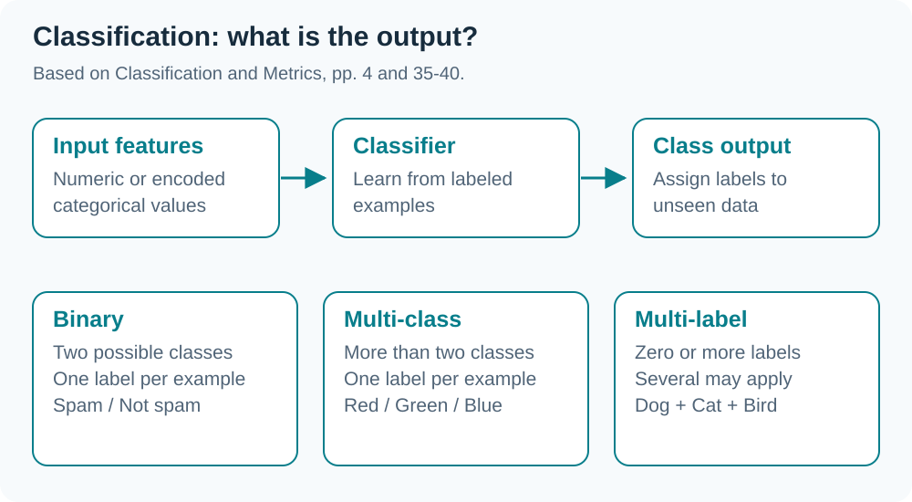
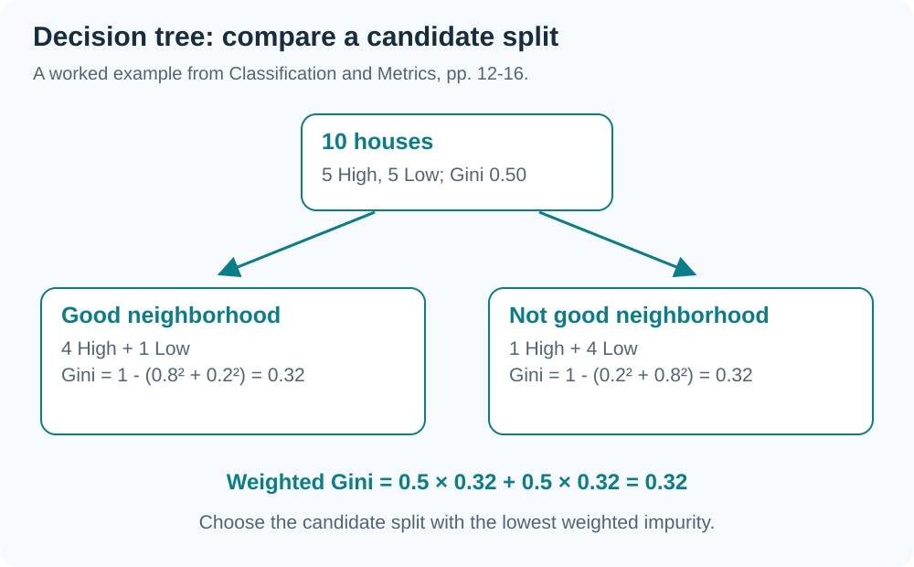
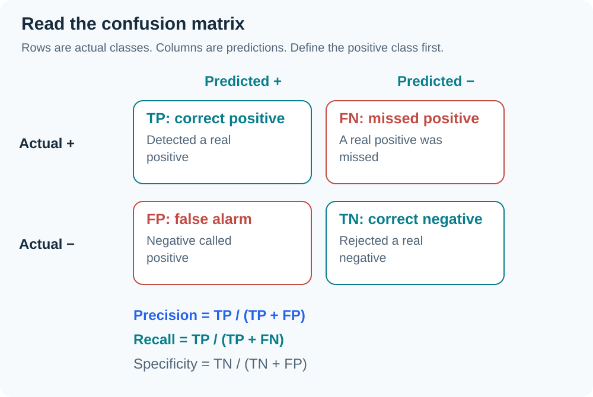
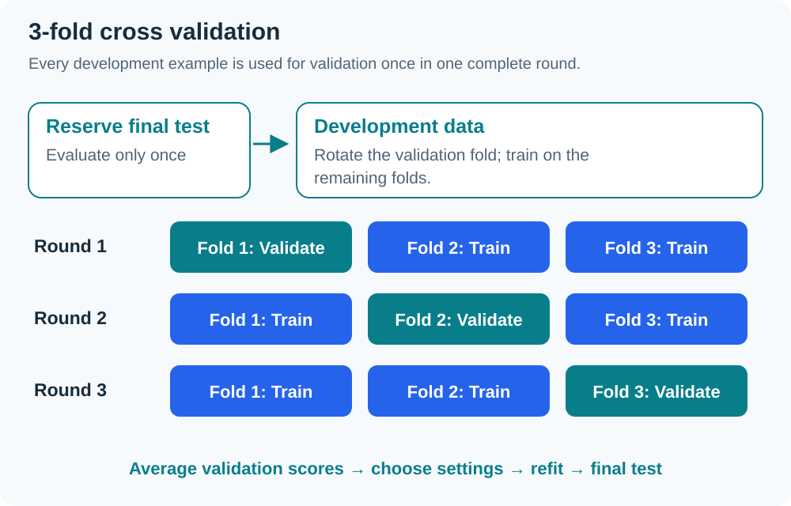
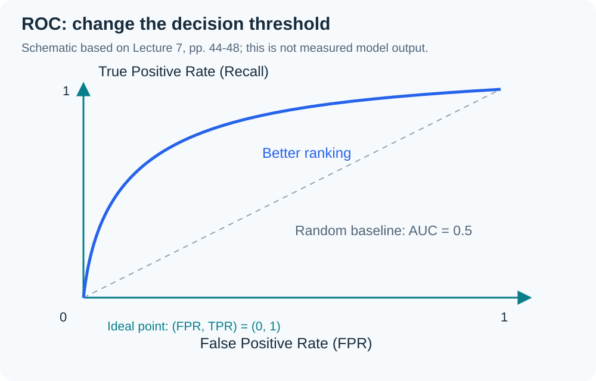

DATA SCIENCE & ARTIFICIAL INTELLIGENCE
เข้าใจแนวคิด
ผ่านภาพและสรุป
ทบทวน INT182 สัปดาห์ 1–9 พร้อมสูตร ตัวอย่าง และไดอะแกรม
อ่านบทล่าสุด ↗ดูไดอะแกรม ↓
09 สัปดาห์TH / EN สองภาษา10 ไดอะแกรมสรุปใหม่เนื้อหาถึง 7 ต.ค. 2026
เลือกบทที่อยากทบทวน
เรียงตามคาบเรียน ตั้งแต่พื้นฐานข้อมูลถึงการเรียนรู้ของเครื่อง
พื้นฐาน Data Science
W01แนะนำวิชา + โครงสร้างโปรเจกต์2026-08-07W02ภาพรวม DS/AI (ต่อ) + เครื่องมือ Orange2026-08-14W03EDA และ Model Fitting — Box Plot, Correlation, Linear Regression2026-08-19W04Association Rules — Market Basket Analysis, Apriori และ Support/Confidence/Lift2026-08-26W05Decision Trees, K-means Clustering และการทวนขอบเขต Exam 12026-09-04
Classification และการวัดผล
AI และ Machine Learning
ทบทวนด้วยไดอะแกรม
กดภาพเพื่อขยาย แล้วเลือกอ่านคำอธิบายในบทเรียน







เกี่ยวกับสรุปนี้
อ้างอิงสไลด์และบันทึกคาบเรียนที่ได้รับ โดยแยกข้อจำกัดของการถอดเสียงและแหล่งข้อมูลไว้ในแต่ละบท สัปดาห์ 9 ใช้บันทึก G1 วันที่ 7 ต.ค.; กำหนดงานของ G2 ควรตรวจประกาศของกลุ่มอีกครั้ง